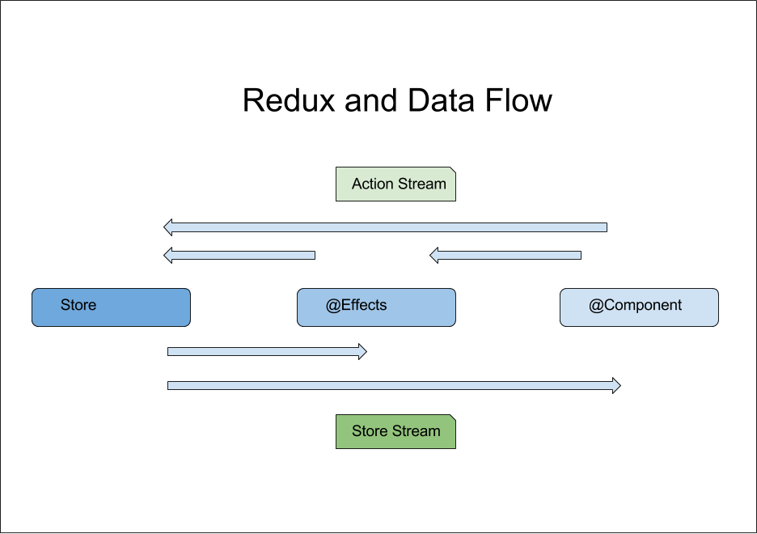

Rangle.io Angular Training
Managing State with Redux
Roadmap
- How should we keep track of our application’s state?
- What are the principal components of the Redux model?
- How do we dispatch actions?
- How do we respond to state changes?
- What tools are available for working with Redux?
The Problem
- Different parts of an application need to reflect different aspects of its state
- Different parts of an application can update different aspects of its state
- Those updates can happen asynchronously
What Should a Good State Management System Do?
- Provide a single source of truth
- Provide separation of concern
- Data and logic should be able to evolve separately
- Improve scalability by having things react to events
- As opposed to a caller dictating actions
- Create a coherent framework so future developers will know where and how to add features
- Provide uni-directional data flow so that future developers can reason about interactions
Why Do We Need a New Pattern?
Server requests are different from user interactions:
- User requests are handled by a single-threaded browser, while server requests are handled by multi-threaded servlets
- User requests often modify the same objects but server requests usually modify different ones
- Users expect to be notified about changes immediately: servers are more patient
Similarities of Structure - Redux vs Backend Architecture
| Function | Angular With Redux | Server |
|---|---|---|
| Data Storage | Store | Database |
| Presentation View | @Component |
Client API |
| Logic to massage data for Storage | @Effects |
Services |
| Communication | Action / Observables | Function Invocation |
Redux as a System

The Store
- Stores the entire current state of the application
- In principle, entire state replaced each time something changes
- I.e., state is never modified in place
- So no need to worry about concurrency effects
- In practice, can often replace some parts and copy other parts forward
- Application components watch Observable streams for updates and change what they display
FIXME: diagram of state update
Actions
- Actions are objects that tell the store how to update itself
- Use actions instead of direct function invocation so that they can be serialized
- Each action is an
Objectwith:type: identifies what kind of action this is (to allow selection and filtering)payload: extra information needed to carry out the action- This is just a convention, but a widely-used one
Reducers
- When actions are dispatched, reducers are called passing in the current state and the action being dispatched
- A reducer is a pure function (without side-effects) with two parameters
state: Is the current redux state of your storeaction: Is anObjectthat contains thetypeandpayload
- Reducers should not mutate the state, but return a copy or a new state
export function reducer(state: AppState = [], action: Action) {
switch (action.type) {
case ITEM_ADD:
//...do something with state
default:
return state;
}
}
Plan for Refactoring
- Define the reducer that turns a state and an action into a new state
- Define actions
- Main component will dispatch an action to add an item
- Display will monitor the store for changes
Notes:
- We will use @ngrx for our store
- Many other implementations of the Redux pattern exist
- We will leave room in our store to add more state later
- Angular CLI doesn’t know anything about @ngrx, so we have to do most of the work by hand
Redux Tools
- Best way to learn Redux is to visualize what it’s doing
- Use Redux DevTools Extension
- Shows application state
- Provides visualization of all actions that have been dispatch
- Time travelling by moving backwards and forwards on actions that have been dispatch
Install Required Software
npm install @ngrx/core @ngrx/store --save- We will also install the ngrx dev tools
npm install @ngrx/store-devtools --save
- The
--saveoption updatespackage.json - So the next person can just do
npm install
Install Redux Chrome Extensions
- Works with many other tools:
- Chrome through the web store
- Firefox
- Electron and others
- After installing the extension in Chrome, there should be a tab in Chrome DevTools labeled “Redux”.

Create the Reducer
- Create a new file
src/app/store.ts - Import
Actionto define the shape of actions - Define constants for action names (as strings)
- Also define the initial state
- An empty item list
- New state is the old list plus a new item
- New item arrives as action’s payload
- Do not use
items.pushto update existing state- More efficient…
- …but only if correctness and programmer time aren’t issues
Create the Reducer
- Set up definitions
src/app/store.ts
import { Action } from '@ngrx/store';
export const ITEM_ADD = 'ITEM_ADD';
export interface AppState {
items: string[];
}
const DEFAULT_STATE: AppState = {
items: []
};
Create the Reducer
- Define the reducer function
src/app/store.ts
export function reducer(state: AppState = DEFAULT_STATE, action: Action) {
let newState;
switch (action.type) {
case ITEM_ADD:
newState = {items: [...state.items, action.payload]};
return newState;
default:
return state;
}
}
Add the Store to the Application
src/app/app.module.ts
import { StoreModule } from '@ngrx/store';
import { reducer } from './store';
@NgModule({
declarations: [
// ...as before...
],
imports: [
// ...as before...
StoreModule.provideStore(reducer)
],
// ...as before...
})
export class AppModule { }
- Note the
provideStorecall inimports
Add the StoreDevTools to the Application
- Import
StoreDevtoolsModuleinto our module
import { StoreDevtoolsModule } from '@ngrx/store-devtools';
@NgModule({
imports: [
// ...as before...
StoreModule.provideStore(reducer),
// Note that you must instrument after importing StoreModule
StoreDevtoolsModule.instrumentOnlyWithExtension({})
]
})
export class AppModule { }
Clean Up the Main Application’s HTML
src/app/app.component.html (old)
<h1>{{title}}</h1>
<app-to-do-list [thingsToDo]="thingsToDo"></app-to-do-list>
<app-generic-input (newItem)="onNewItem($event)"></app-generic-input>
src/app/app.component.html (new)
<h1>{{title}}</h1>
<app-to-do-list></app-to-do-list>
<app-generic-input (newItem)="onNewItem($event)"></app-generic-input>
Dispatch Actions for New Items
src/app/app.component.ts
import { Store } from '@ngrx/store';
import { AppState, ITEM_ADD, reducer } from './store';
export class AppComponent {
constructor (private store: Store<AppState>) { }
onNewItem(item: string) {
this.store.dispatch({type: ITEM_ADD, payload: item});
}
}
- Note: no longer storing state in
AppComponent
Redux DevTools
- New “Redux” tab in our browser’s developer tools pane after successful installation, configuration and injecting the store

Update the To-Do List Display
src/app/to-do-list/to-do-list.component.ts
import { Store } from '@ngrx/store';
import { AppState } from '../store';
export class ToDoListComponent implements OnInit {
thingsToDo: string[];
constructor(private store: Store<AppState>) { }
ngOnInit() {
this.store
.select('items')
.subscribe((items: string[]) => {this.thingsToDo = items.slice();});
}
}
Picking That Apart
src/app/to-do-list/to-do-list.component.ts
this.store
.select('items')
.subscribe((items: string[]) => {this.thingsToDo = items.slice();});
- The store is observable
- So we can filter (select) top-level elements by name
- Only pay attention to events signalling changes to
store['items']
- Only pay attention to events signalling changes to
- And subscribe to just those changes
- When we get a new list of items…
- …because that’s all we’re paying attention to…
- …we copy it into the list we’re displaying…
- …because we don’t way to share state
Redux Seems Complex
So let’s see how we’d go about deleting items:
- Add a
Deletebutton beside each item in the display. - Have the
onDeletehandler inToDoListComponentdispatch anITEM_DELETEevent- With the text of the item to delete as its payload
- Have the store update state when it receives that action
- There is no Step 4
Update the To-Do List Display
src/app/to-do-list/to-do-list.component.html
<table>
<tr>
<th>Delete</th>
<th>Item</th>
</tr>
<tr *ngFor="let item of thingsToDo">
<td><button (click)="onDelete(item)">X</button></td>
<td>{{item}}</td>
</tr>
</table>
Provide the Deletion Method
src/app/to-do-list/to-do-list.component.ts
import { AppState, ITEM_DELETE } from '../store';
export class ToDoListComponent implements OnInit {
// ...as before...
onDelete(item) {
this.store.dispatch({type: ITEM_DELETE, payload: item});
}
}
- Compilation error because
ITEM_DELETEdoesn’t yet exist
Upgrade the Store
src/app/store.ts
export const ITEM_DELETE = 'ITEM_DELETE';
export function reducer(state: AppState = DEFAULT_STATE, action: Action) {
switch (action.type) {
case ITEM_DELETE:
newState = {
items: state.items.filter(item => {return item != action.payload})
};
return newState;
...other cases...
}
}
Getting Information from a Store
- State is exposed through the
Storeservice as anObservablestream - The
selectcarries information away from the storeStoreprovides a.select()method to select pieces of state:- By key:
this.store.select('people') - By nested key:
this.store.select('city', 'people') - By function:
this.store.select(state => state.people)
- Can chain other operators like
.filter(),.map()to have finer-grained control over selected data
Handling Async Events in the Application With Redux
- The
@ngrx/effectslibrary is responsible for business logic and async actions- E.g., HTTP calls
- Does not keep local state
- Listens on the action stream
- Adheres to “Action In/Action Out”
- Typical use is:
- Take user input
- make HTTP call
- Provide output to go into store
Handling Side Effects with @Effect
@Injectable()
export class CollectionEffects {
constructor(
private actions: Actions,
private db: Database
) {}
@Effect()
removeBookFromCollection: Observable<Action> = this.actions
.ofType(collection.ActionTypes.REMOVE_BOOK)
.map((action: collection.RemoveBookAction) => action.payload)
.mergeMap(book => this.db.executeWrite('books', 'delete', [ book.id ]))
.map(() => {
type : ActionTypes.REMOVE_BOOK_SUCCESS,
payload : book.id
})
.catch(() => Observable.of(new collection.RemoveBookFailAction(book)));
}
FAQ
Is the reducer the store?
No, a reducer only describes how the store’s state should change
based on a dispatched action. Our actual state is stored outside of
our reducers. In the case of @ngrx, state is stored within an
Observable stream that can be listened to.
FAQ
Can I have more than one store?
No, redux uses one global store to manage state., however it is common practice to divide your store into separate areas of concern.
Just as we can configure our store like this:
StoreModule.provideStore(reducer)
We are also able to pass in an object and associate a reducer with a given piece
of our state
StoreModule.provideStore({ todos: todosReducer, users: usersReducer })
We can also take advantage of functional composition, and “combine” multiple
reducers into one using the combineReducers helper function @ngrx provides.
FAQ
Does the UI broadcast actions and store broadcast actions back?
The UI should not broadcast actions directly, it can and often should dispatch actions through “action creator” methods which can be made available through a component or service.
In a more traditional Flux architecture, while a store may have broadcasted actions whenever state changed, Redux does not. Instead of reacting to actions dispatched out from our store, we instead react to the changes in our state itself, we don’t concerned ourselves with how state has changed.
The actions are generally what we call the events being broadcasted to the store. When events leave the store due to a state change it is done through a store select.
FAQ
Instead of dealing with observables, can we simply call methods directly?
By calling methods directly, we must now take on the responsibility of manually managing state (often spread across numerous locations) and ensuring that all concerned portions of our application are notified of updated state. This approach tends to be more error-prone and is more difficult to maintain and scale in larger applications.
The advantage of Redux is that this state management is handled in one location which is easier to reason about, and our application can simply react whenever application state changes.
FAQ
I have an awesome idea/implementation that does the same thing, can I use that?
Absolutely. Ultimately Redux is just a pattern for state management. Be warned however that many of the strengths of Redux lie in its conventions and community support. Convention allows other developers to ramp up quickly on a pattern they’re already familiar with, and community support means better tooling, more middleware,updates/bug fixes, and a larger knowledge base to draw upon. Choose whichever solution ends up being best for you and your team.
Home